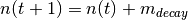

hunger module¶
This module contains information about governing the need Hunger.
This module contains the class Hunger (hunger.Hunger).
-
class
hunger.Hunger(clock, num_sample_points)[source]¶ Bases:
need.NeedThis class governs the behavior of the need Hunger need. When Hunger is unstatisfied, the agent feels compelled to eat a meal in order to satisfy the need. Mathematically speaking, Hunger is modeled as linear-behaving need.
Parameters: - clock (temporal.Temporal) – the time
- num_sample_points (int) – the number of temporal nodes in the simulation
Variables: - category (int) – the category of the need
- decay_rate (float) – the decay rate of the Hunger need [need/minute]
- recharge_rate (float) – the recharge rate of the Hunger need [need/min]
- suggested_recharge_rate (float) – an approximate recharge rate used to calculate the end time of an event before rounding
-
decay(status)[source]¶ This function decreases the satiation in Hunger by doing the following:

Warning
This function may be antiquated and not used
Parameters: status (int) – indicates the current status of the person’s state (not-used) Returns: None
-
decay_new(dt)[source]¶ This function sets the default decrease in the Hunger need.

- where
 is the current time
is the current time is the duration of time to decay the satiation [minutes]
is the duration of time to decay the satiation [minutes] is the satiation for Hunger at time
is the satiation for Hunger at time  the decay rate for Hunger
the decay rate for Hunger
Parameters: dt (int) – the duration of time [minutes] used to decay the needReturns: None
-
initialize(p)[source]¶ This function initializes the the Hunger need at the first step of the simulation. The function checks to see whether or not the current time implies that there should be an eating event. The Hunger object is set to the respective state.
This function does the following exactly:
initialize all of the meals
check to see if a meal should be occurring at the current time
if no meals should be occurring
- figure out the next meal
- calculate the decay rate for hunger until the next meal
- calculate the amount of time until the next meal
- set the current meal
- update the schedule for the hunger need to be the time the next meal starts
if a meal should be occurring
- get the index of the meal that should be occurring
- set the current meal
- calculate the final time of the meal
- calculate the duration until the end of the next meal
- set the recharge rate
- update the scheduler for the hunger need to be the time the current meal should end
initialize the start time for each meal
Parameters: p (person.Person) – the person whose hunger need is being initialized Returns: None
-
is_meal_time(t, the_meal)[source]¶ This checks whether or not it is time for a meal.
Parameters: - t (int) – time of day [minutes]
- the_meal (meal.Meal) – the respective meal to see whether the current time implies that an eating event should happen
Returns: True if the current time is within the time to eat. False, otherwise
Return type: bool
-
is_meal_time_all(t, meals)[source]¶ This function checks every meal and sees whether or not the current time implies that there should be an eventing event for a respective meal.
Parameters: - t (int) – the current time of day [minutes]
- meals (list) – a list of meals that a person has
Returns: a list of boolean flags indicating True or False, indicating whether or not an eating event should occur for the respective meal
Return type: list
-
perceive(future_clock)[source]¶ This gives the result if eat is done now until a later time corresponding to clock.
Parameters: future_clock (temporal.Temporal) – a clock at a future time Return out: the perceived hunger need association level Return type: float
-
reset()[source]¶ This function resets the values in order for the need to be used in the next simulation.
Returns:
-
set_decay_rate(t_start)[source]¶ This function calculates the decay rate of hunger to the next meal.
Parameters: - dt (int) – the amount of time to the next meal [minutes]
- t_start (int) – the start time [in minutes] of the next meal
Returns: None
- dt (int) – the amount of time
-
set_decay_rate_new(dt)[source]¶ This function calculates the decay rate of hunger to the next meal.
Parameters: dt (int) – the amount of time to the next meal [minutes]Returns: None
-
set_recharge_rate(dt)[source]¶ This function calculates the recharge rate of hunger due to eating the current meal.
Parameters: dt (int) – the amount of time it takes to finish a meal [minutes]Returns: None
-
set_suggested_recharge_rate(dt)[source]¶ This function sets the suggested recharge rate assuming a linear function behavior
The suggested recharge rate is based on the duration of the sleeping event and the threshold. The sleep duration is based on the biological data (no rounding).
Parameters: dt (int) – The duration of time of the eating event [minutes]Returns: None